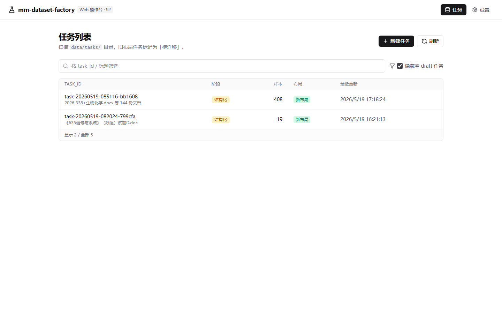
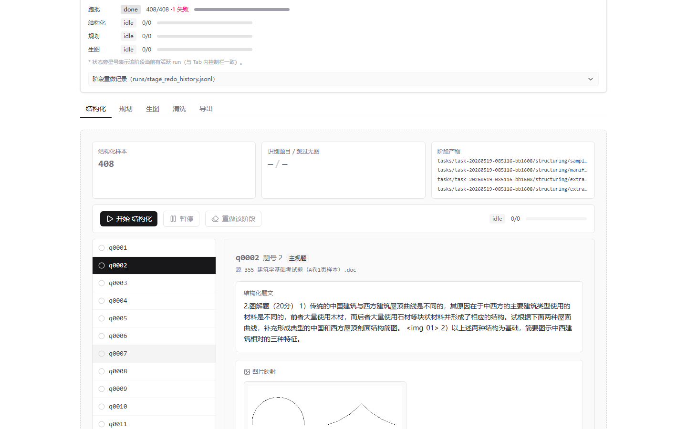
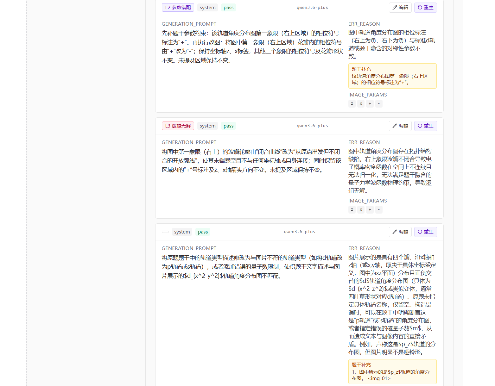
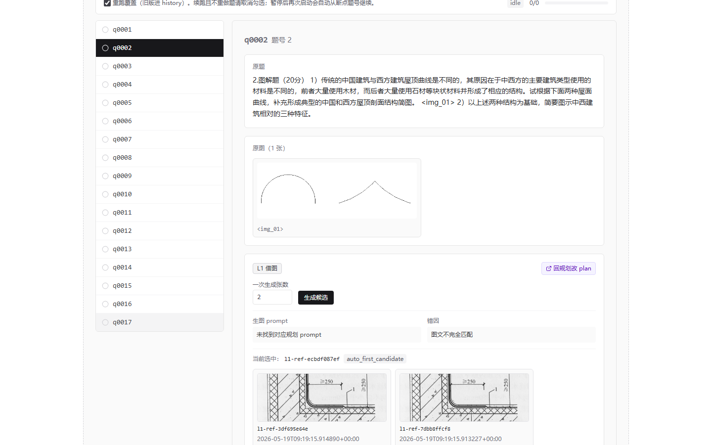
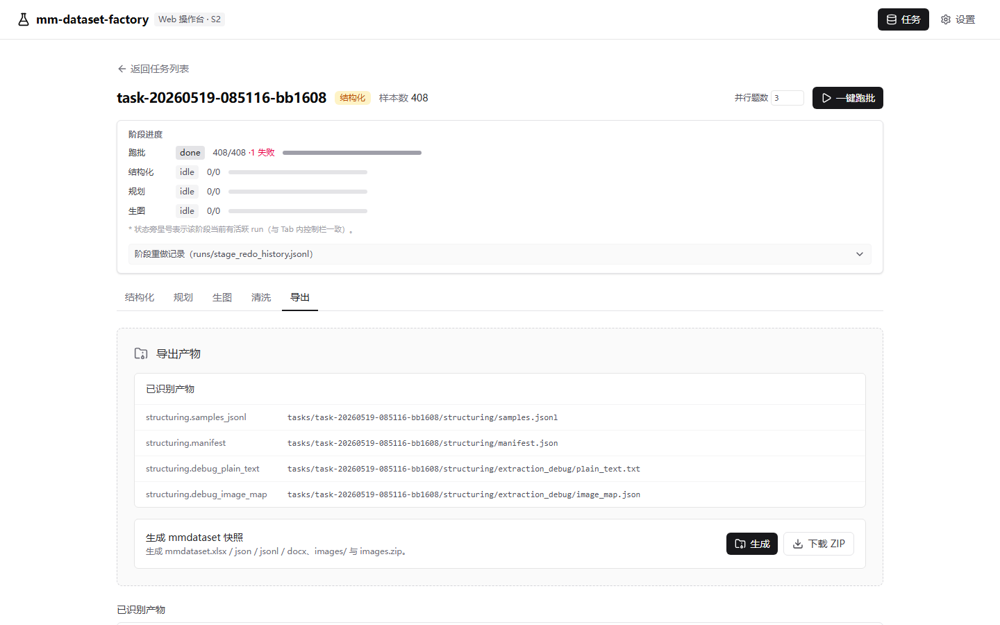
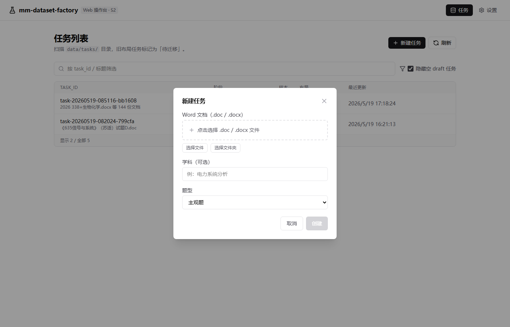

🗂 多模态数据集工厂
mm_dataset_factory — 从 Word/DOCX 一键产出错题图像数据集，4 阶段流水线 + SSE 实时推流 + Skill-as-contract 交付架构
项目概览
面向多模态模型（LMM/VLM）训练数据生产场景，本系统从 Word/DOCX 试卷文档自动提取含图题目，
经过 4 个流水线阶段最终产出可直接用于训练的错题图像数据集：
JSON / JSONL / XLSX 标注文件 + 图片目录（zip 包）。
前后端分离架构，FastAPI 提供异步 REST API + SSE 实时推流，React/Vite 提供操作界面，
一条命令启动（python run.py）。
技术栈
4 阶段生产流水线
架构
技术深度
① 阶段一：文档结构化（paper-structuring）
读取 Word/DOCX 文档，以"小题"为粒度（一小题一条 Sample）提取内容。
规则：仅保留含图小题，无图小题跳过。
图片按题内重新编号（img_01、img_02 …），
题目文本保留图占位符 <img_01> 形式，便于后续阶段追踪图文对应关系。
图片落盘到 tasks/{task_id}/images/，文件名格式 q0001_img_01.png。
同时生成调试产物：提取文本、imageMap JSON、原始图片备份。
关键字段（Sample）：sample_no · source_file · question_no · subject · question_type · question_text · image_count · image_map
② 阶段二：VLM 错误规划（vlm-error-planning）与 L1/L2/L3 三级错误体系
调用 VLM API 分析每道含图题目，对每个样本固定输出 3 行规划（L1 / L2 / L3）：
unsolvable_reason。同样进入评估闭环，达到轮次上限转 machine_reject。
文本补全（text_enrichment）机制：当 L2/L3 计划涉及"修改图中数值"但题文中缺失对应数值锚点时，
先执行受控文本补全并合并进该行导出的 question_text，再评估。
不允许将补全任务下推给图像生成阶段口头声明，确保数据一致性。
规划产物：planning/plan_eval_report.jsonl（含 severity / decision / judge_trace）+ questions_prompt_plan.xlsx/.jsonl
③ 阶段三：图像生成（text2image-generation）
以 questions_prompt_plan.jsonl 为输入，对每条 L2/L3 规划调用 Text-to-Image API 生成替换图片；
L1 直接在任务图片库内选图替换，不走生成 API。
生成结果落盘到 tasks/{task_id}/generated/，记录对应 sample_no + error_level。
④ SSE 进程内事件总线（asyncio EventBus）
每个流水线阶段的 runner 通过 EventBus.publish(Event) 广播进度事件，
SSE 路由 /api/events 为每个订阅客户端维护独立的 asyncio.Queue，
实现进程内零延迟广播。前端通过 useTaskEvents() Hook 订阅并自动重连，
实时展示每题的处理状态与进度数字。
⑤ 数据模型（SQLAlchemy async ORM）
阶段进度由前端聚合 SampleState.status 计算（total / done / failed / machine_reject），
无需额外进度表。所有 ORM 操作均通过 async with session 异步执行，保证吞吐。
⑥ SKILL.md 作为功能交付契约
每个功能模块对应一份 SKILL.md，严格定义：
支持动作（create_task / run_task / list_samples / export_dataset）、
输入字段约束、输出字段规范（success / data / errors / meta）、
阶段产物路径与格式。这使 AI Coding Agent 可以按契约验收功能，而非凭经验猜测接口行为。
⑦ 导出格式
质量门控通过后，支持多格式导出：
- JSON / JSONL — 标准多模态训练数据格式
- XLSX — 人工审核与修订
- images.zip — 所有生成图片打包
- StaticFiles 白名单确保只有已知安全路径可通过
/static/*访问
API 端点
截图






提示词工程与 LLM 架构
规划阶段是提示词工程的核心。未使用 LangChain，而是自研薄封装
（httpx + OpenAI 兼容 Chat Completions + .prompt 模板 + Pydantic），
以换取对提示词、JSON 容错、多供应商适配的完全掌控。
- 形态：确定性工作流为骨架，规划阶段内嵌 planner–judge（LLM-as-Judge）自我修正闭环（pass / repair / regenerate / machine_reject）。
- 提示词分层：角色 → 输入槽 → 目标 → 分级选参策略 → 等级硬边界（l2 仅参数层 / l3 必须结构层）→ 三要素写作约束（定位锚点 + 具体画法 + 可视验收）→ 正反例 → JSON 字段白名单。
- 控制手段：system 强制 JSON、温度分档（抽取/评审 0.0、planner 0.2）、judge 先产出 alignment_table 再裁决、关闭 thinking。
- 生图 prompt：固定「局部编辑」前缀 + 题干 + 图中参数 + planner 改图指令；原图随请求上传；L1 / text 不调生图。
- 多层兜底：JSON 三级容错、planner 正则 guard、judge 异常当 regenerate、轮次耗尽 best-of 择优、生图重试 + 指数退避、provider 自动切 DashScope。
- Few-shot：l2 / l3 / judge 提示内嵌正例 + 反例（标注"仅学风格，勿原样复述"）。
核心亮点
- 4 阶段流水线覆盖从文档解析到数据集导出的全链路，支持按阶段重试
- L1/L2/L3 三级错误规划体系 + "生成后评估"闭环，保证数据质量
- asyncio EventBus + SSE 实时推流，前端零轮询展示逐题处理进度
- SKILL.md 契约驱动开发，AI Agent 可按契约验收功能
- SQLAlchemy async ORM + SQLite，全异步无阻塞
- TypeScript strict 全面禁 any，Python 类型注解完整